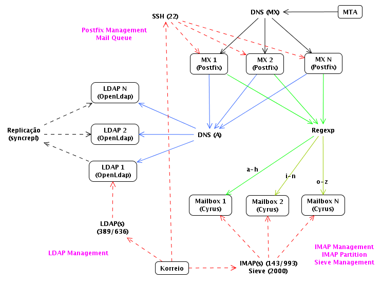

Korreio

. LDAP over SSL.
. Search entries (LDAP filter syntax).
. Add entries wizard (inetOrgPerson, posixAccount, sambaSamAccount, astSipPeer, radiusProfile).
. Remove entries.
. Rename entries (change DN).
. Copy/Cut and paste entries.
. Add, remove, edit attributes of entries.
. Auxiliary schema "idea": add pre-configured attributes on objectClass addition.
. Change password tool: create userPassword hashs (SSHA, SHA, SMD5, MD5, CRYPT, plain text and sambaNT/LM).
. Create entries for Samba (Populate): Users, Computers, Groups, etc..
. Create entries for DHCP server.
. CSV to LDIF converter.
. IMAP over SSL.
. Search mailboxes.
. Add user mailboxes and default folders, quota and acls.
. Remove mailboxes.
. Rename mailboxes.
. Reconstruct mailboxes.
. Show and set quotas.
. Show and set annotations (expire, etc).
. Show and set ACLs (mailboxes shares).
. Export: user mailboxes, all mailboxes or Korreio Interchange Format (mailboxes, quota, acls, annotations).
. IMAP over SSL.
. Search mailboxes.
. Show and set IMAP-Partition.
. Show (used, limit and percentage) and set quota for many users.
. Show last POP3 connection and last mailbox update.
. Export to CSV.
. Search and list Sieve script per user.
. Edit sieve script per user, selection or for all.
. Remove sieve script per user, selection or for all.
. Sieve script editor (code helper).
. Sieve script templates: routing, discard spam, vacation, filter by sender, etc..
. Show messages in queue.
. Messages grouped by sender.
. Displays all messages and recipients.
. Search messages in queue by sender and/or recipient.
. Remove, hold, unhold and requeue, by message, sender or all.
. Display the reason for non-delivery.
. Display the date when message entered in the queue.
. Display the total in Kbytes of messages by sender.
Author
Reinaldo de Carvalho (reinaldoc{NOSPAM}gmail.com)